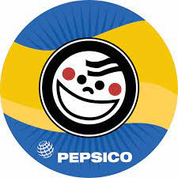

¿Cómo surgió Sabritas y quién la fundó? El sitio web de la marca explica que Sabritas surgió en 1943 como un pequeño puesto de botanas. Inicialmente, los fundadores Pedro Marcos Noriega y su esposa Guadalupe preparaban bolsas de habas y garbanzos fritos, las que se repartían en bicicleta en distintos puntos de la ciudad. Para 1948, el negocio tomó el nombre de ‘Sabritas’, que surgió al fusionar los nombres de dos características que consideraban que tenían sus botanas: ‘sabrosas’ y ‘fritas’. Esto fue idea de Guillermo Noriega, hijo del matrimonio fundador, quien quedó al frente de la empresa en 1963, cuando su padre murió.
MISION Y VISION: Bajo el liderazgo de nuestro director ejecutivo y presidente de la mesa directiva, Ramón Laguarta, un grupo de 30 directivos de diferentes áreas de la compañía desarrolló la misión y visión que nos define. Creemos firmemente en que, al asimilarla, podemos mostrar el verdadero potencial de la compañía.